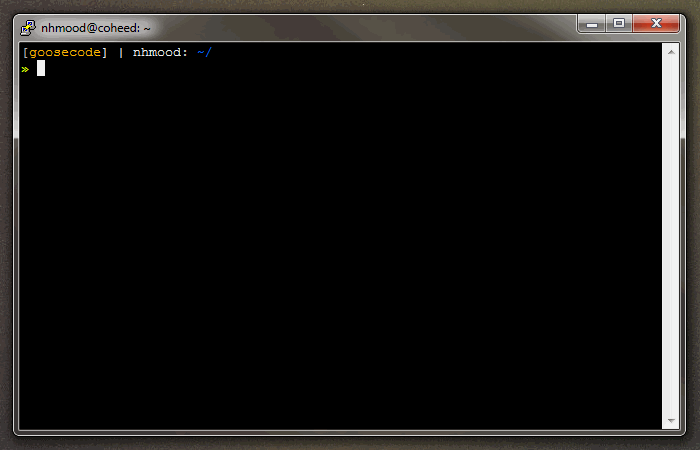
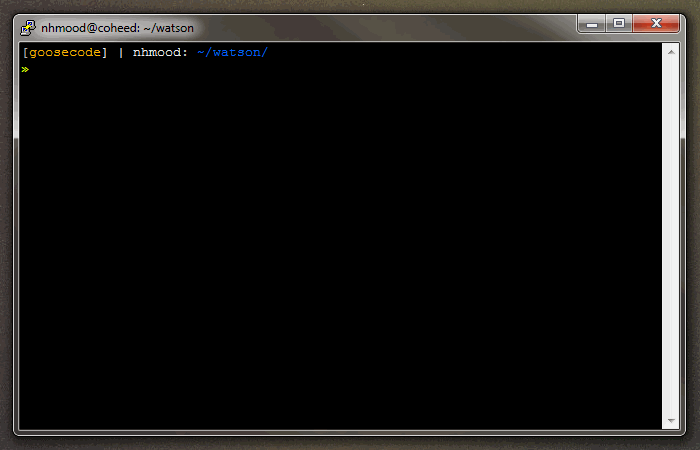
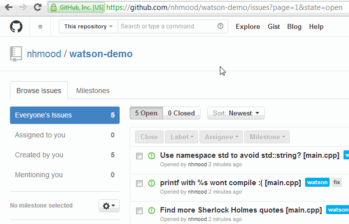

watson in action



get watson
Avaliable in Ruby and Perl, but supports all languages!
Ruby
Perl
Inline Issues
Create issues while you code without ever
having to interrupt your flow. Keep track of a todo item, bring attention to a bug, or just annotate code in an easy and seamless way with watson.
Remote Repo Sync
Keep in sync with remote services like GitHub and Bitbucket so you'll always be up to date. Push locally created issues and get the status of remote issues right in your command line.
Custom Labels
Create custom labels to separate and track any kind of issue. Filter out review results to focus on exactly the type of issue you want.